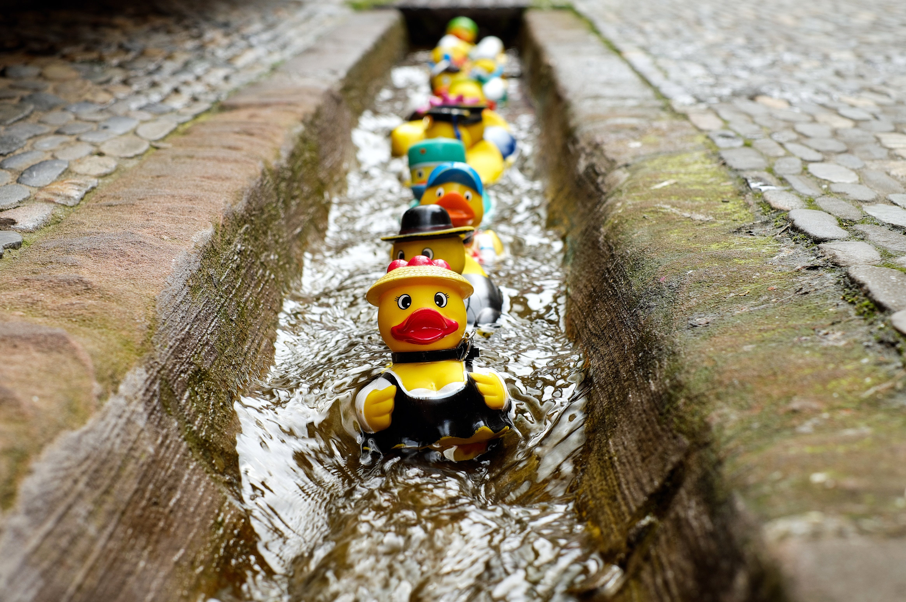

Rubber duckies (spelled ducky or duckie) were invented in the 1800s and made of hard rubber. They were originally intended as chew toys rather than toys for children. Due to being made of such a heavy material, the ducks did not float until they started to be produced using vinyl plastic.
Sesame Street's beloved orange muppet, Ernie, kickstarted new popularity in 1970 with his hit single, “Rubber Duckie”. This began a new wave of popularity for the toy as a bath-time staple with children.
Rubber ducks are mainly used for bathtime fun by children- but they have no age limit! Many enthusiasts collect and trade rubber ducks. Charities and organizations also race rubber ducks as a raffle-style fundraiser.
For instance, Illinois school, Huntley High School, hosts a fundraiser aptly named “Chuck-a-Duck” where participants buy a rubber duck and chuck them across a basketball court at halftime. Those who got their duck closest to the center of the court won donated prizes from local shops and businesses.
There are tons of ways to celebrate these bathtime pals, such as: